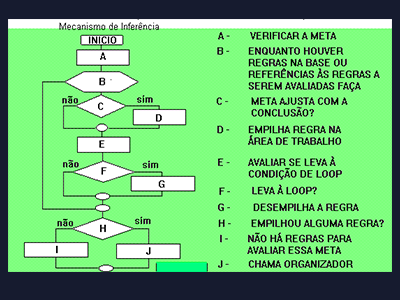

Clique sobre as Áreas destacadas em vermelho

É onde estão armazenadas as informações de um sistemas especialista, ou seja os fatos e as regras. As informações armazenadas de um determinado domínio fazem do sistema um especialista neste domínio.
O quadro-negro é um lugar dentro da memória do computador no qual as informações armazenadas em um sistema especialista são "afixadas" para que qualquer outro sistema especialista possa usá-lo se precisar das informações lá contidas para alcançar seus objetivos. O quadro-negro é uma estrutura que contém informações que podem ser examinadas por sistemas especialistas cooperativos. O que esse sistemas fazem com essas informações depende da aplicação. Você nunca entrou em uma sala de aula e viu um aviso no quadro-negro dizendo que aquela turma mudou de sala? Esse aviso poderia ter sido escrito pela secretária da escola que foi informada de que o professor estaria ausente naquele dia; por isso surgiu a necessidade de combinar turmas similares com um só professor. A secretária estava atenta a essa situação e reagiu de acordo. O conceito do quadro-negro para afixar, modificar e observar mudanças é muito importante para os sistemas cooperativos. Ainda assim, quadro-negro, rascunho ou memória de trabalho tem sua vida útil durante o curso de uma consulta e está vinculada a uma consulta concreta. É uma área de memória usada para fazer avaliações das regras que são recuperadas da base de conhecimento para se chegar a uma solução. As informações são gravadas e apagadas em um processo de inferência até se chegar a solução desejada.
Que pode ser inclusive ser reutilizado por vários sistemas especialistas. É a parte responsável pela busca das regras da base de conhecimento para serem avaliadas, direcionando o processo de inferência. O conhecimento deve estar preparado para uma boa interpretação e os objetos devem estar em uma determinada ordem representados por uma árvore de contexto. Basicamente o mecanismo de inferência é dividido em tarefas que são: Selecionar e buscar Avaliar Procurar Resumindo as tarefas acima, podemos dizer que as regras necessárias para se chegar a uma meta devem ser buscadas na base de conhecimento. Essas regras serão colocadas no quadro negro, sendo que as regras já existentes só serão avaliadas depois das mais recentes. A ordem de avaliação no quadro negro obedece a uma estrutura do tipo pilha com o objetivo de atingir a meta mais recente. A regra continuará sendo avaliada enquanto as condições da premissa forem verdadeiras, caso contrário a regra será eliminada, a meta estabelecida desempilhada e uma nova regra será carregada. Quando um valor de um parâmetro em um determinado contexto não é conhecido e não se encontra nas estruturas de pilha, deve-se então procurar novas informações na base de conhecimento, provocar a busca de novas regras ou perguntar diretamente ao usuário.
